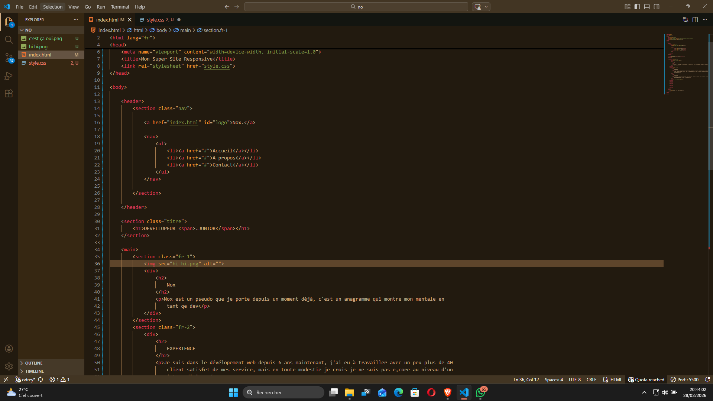
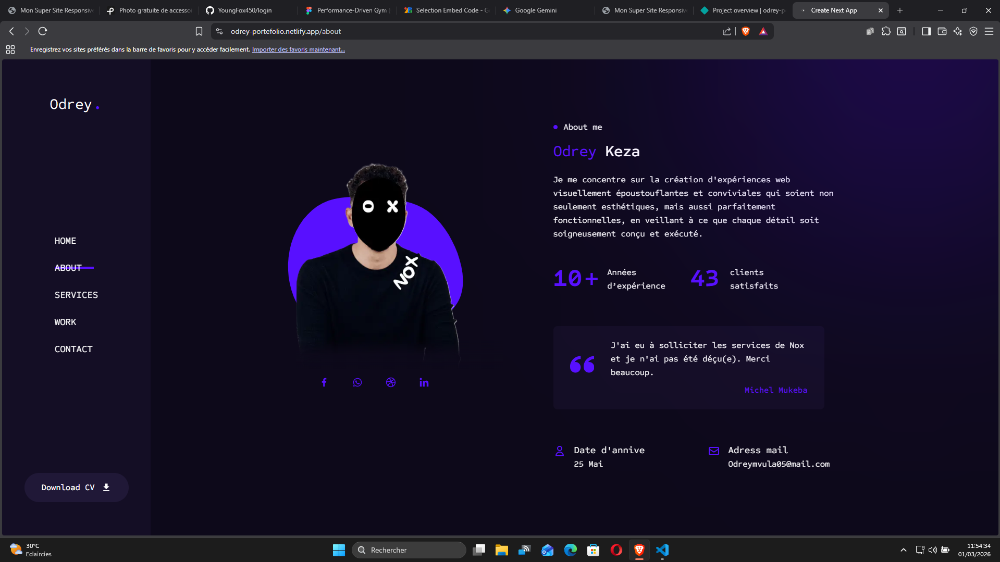

Nox
Nox est un pseudo que je porte depuis un moment déjà. C'est un anagramme qui montre mon mental en tant que dev.
EXPÉRIENCE
Je suis dans le développement web depuis 6 ans maintenant. J'ai eu à travailler avec un peu plus de 40 clients satisfaits de mes services, mais en toute modestie, je crois que je ne suis pas encore au niveau d'un intermédiaire.
EFFICACITÉ
Ma règle d'or : satisfaire le client coûte que coûte. Je dois m'adapter sans cesse aux clients que je sers pendant toute la durée du travail.

DÉVELOPPEUR .JUNIOR
TECHNOLOGIES
React
J'ai de bonnes bases sur React, et je préfère React TSX malgré sa difficulté.
Next.js
Next est un framework complet, si ce n'est le framework fullstack le plus apprécié. Il fournit un bon contrôle du DOM comme React, mais avec une gestion directe du back-end.
TailwindCSS
Pour sa simplicité et son efficacité pour ce qui est du design UI/UX.
